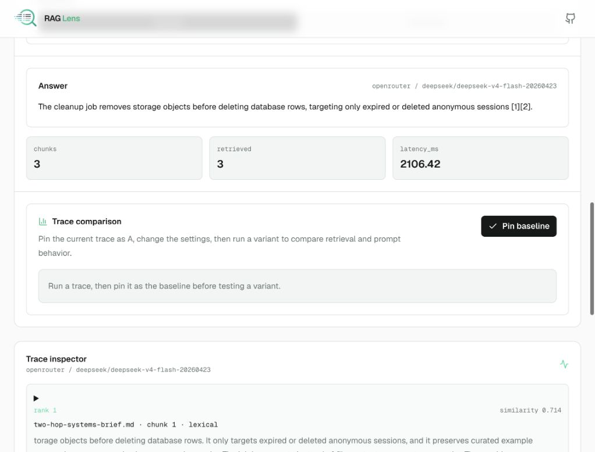

Bring a tiny corpus
Start with first-party examples or upload a PDF, text, or markdown file for an anonymous demo session.
Retrieve, inspect, understand RAG
RAG Lens is a practical debugger for retrieval-augmented generation. Choose an example corpus or upload a temporary document, ask a question, and inspect the evidence trace behind the answer.
The public entry is static GitHub Pages. Render hosts the workbench and backend routes, and anonymous demo uploads expire with the session.

Start with first-party examples or upload a PDF, text, or markdown file for an anonymous demo session.
See chunks, similarity scores, selected context, prompt assembly, response citations, and weak-context explanations.
Rerun with top-k and chunking controls to understand how evidence quality changes the answer.
RAG Lens keeps the full stack visible: ingestion, embeddings, vector retrieval, prompt assembly, answer generation, retention, and public-demo safety.
Top semantic match selected for context. Higher similarity means the chunk is closer to the user's question.
Supporting evidence with citation quality strong enough to ground the final answer.